Git学习笔记
Git的基本原理
Git与其他版本控制系统的差别在于Git对待数据的方法，其他的版本控制系统主要存储文件变更信息，保存的信息可以看作一组基本文件和每个文件随着时间逐步累积的差异。如下图1所示，每个版本存储的都是与上一个版本的差异内容。
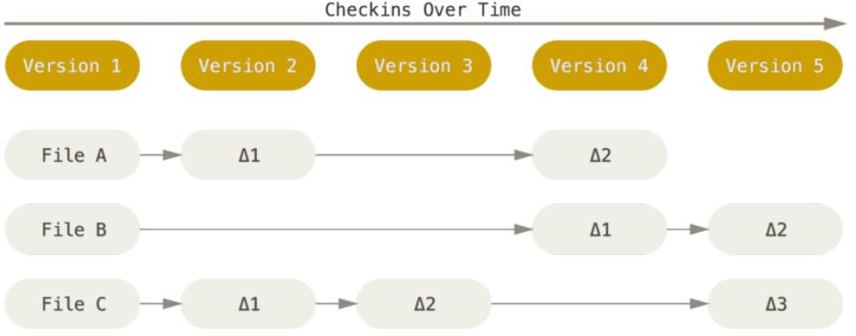
Git则是将数据看作是小型文件系统的一组快照。提交更新或Git保存项目状态时，对当时的全部文件制作一个快照并保存快照索引。为了高效，如果文件没有修改，git不再重新存储文件而只保留一个链接指向之前存储文件。如图2所示，每一个版本对于没有修改的文件则直接使用虚线表示前面文件的索引。
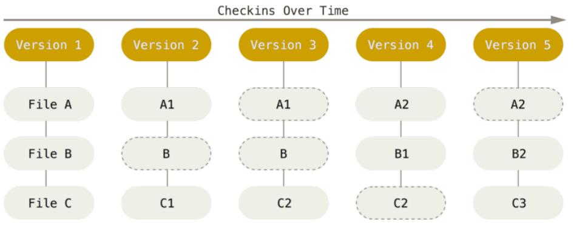
Git有三种状态，文件会处于其中之一：已提交（committed），已修改（modified）和已暂存（staged）。与三种状态对应引入了Git项目中的三个工作区域的概念：Git仓库，工作目录以及暂存区域。三个工作区域的交互如下图3所示。
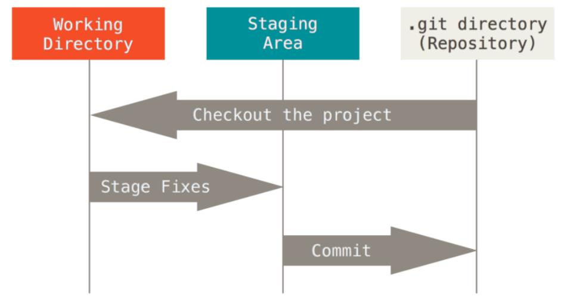
Git仓库用来保存项目的元数据和对象数据库，它是git最重要的部分，从其他计算机克隆仓库时拷贝的就是这里的内容。
工作目录是对应项目的某个版本提取出来的内容。即从Git仓库的压缩数据库中提取出来的文件，放在磁盘上供使用或修改。
暂存区域是一个文件，保存了下一次将提交的文件列表信息，一般在Git仓库目录中。
基本的Git工作流程：
- 在工作目录中修改文件。
- 暂存文件，将文件快照放入暂存区域。
- 提交更新，找到暂存区域的文件，将快照永久性存储到Git仓库目录。
Git帮助
通过如下三种方式可以获取Git命令的使用手册中帮助信息。
git help <verb>
git <verb> --help
man git-<verb> // 仅仅用于Linux类系统
比如 git help config即打开本地Git文档对应的config命令的文档。
Git配置
Git自带一个git config工具用来帮助设置Git外观和行为，每台机器上只需配置一次。git config配置的变量会存储在三个不同位置：
/etc/gitconfig文件：包含了每一个用户以及他们仓库的通用配置，使用带有--system选项的git config时会从这个文件读写配置变量。在windows上该文件位于Git安装目录下。～/.gitconfig或～/.config/git/config文件：只针对当前用户，可以传递git config --global形式的命令来读写该文件。在Windows系统中，Git会查找$PATH目录下的.gitconfig文件，用于针对用户的设置。- 当使用当前仓库的git目录中的config文件（即
.git/config），则只针对当前仓库生效。
每一级的配置信息会覆盖上一级中相同的配置信息。
用户信息：首先要设置你的用户名称和邮件地址，每一个Git的提交都会使用这些信息，会写入每一次提交中。配置个人信息如下方式：
git config --global user.name "John Doe"
git config --global user.email johndoe@example.com
使用参数--global会将配置信息写入系统登录账户相关的配置文件中，即～/.gitconfig中。如果在Windows上使用--system选项，配置内容会被写入Git安装目录下mingw32\etc\gitconfig文件中，其并不在Git命令行中根目录的/etc/gitconfig文件中。
文本编辑器： 如果未配置，Git使用系统的默认文本编辑器，通常是Vim。如果要设置为Emacs可以使用git config --global core.editor emacs命令。
core.autocrlf: git config --global core.autocrlf true将允许保留纯文本文件中的CRLF字符而不强制归一化为LF符号。
在Windows上写文档，将core.autocrlf设置为true，那么在检出代码时换行符LF会被转换成回车换行（CRLF）；而如果在Linux上，则不需要在检出文件时做自动转换，但是如果回车换行（CRLF）此时被当作换行，则会想让Git修正，则可以把core.autocrlf设置为input，同时告诉Git在提交时把回车换行（CRLF）换成换行LF，检出时不换；如果是Windows程序员，且开发项目只在Windows上使用，则可以将core.autocrlf设置为false，将回车换行保留在版本库。
# 提交时转换为LF，检出时转换为CRLF
git config --global core.autocrlf true
# 提交时转换为LF，检出时不转换
git config --global core.autocrlf input
# 提交检出均不转换
git config --global core.autocrlf false
// 对于提交文档换行符的校验
# 拒绝提交包含混合换行符的文件
git config --global core.safecrlf true
# 允许提交包含混合换行符的文件
git config --global core.safecrlf false
# 提交包含混合换行符的文件时给出警告
git config --global core.safecrlf warn
如果core.autocrlf为true或input且core.safecrlf为true，那么Git在入库时会检查行结束符是否满足条件。即在Windows上，如果core.autocrlf为true，core.safecrlf为true，工作区文件中包含了LF，则Git就会拒绝入库。默认的core.autocrlf值为warn，所以在执行git add命令时提示warnning。
使用git config --list命令可以列举出Git当前能够找到的所有配置信息。命令git config <key>可以查看<key>对应的配置内容，使用git config --help查看文档中config更多的参数含义。
获取Git仓库###：
获取Git仓库有两种方法，一种是在现有的目录下初始化Git库，然后导入所有文件到Git中，第二种是从一个服务器克隆一个现有Git仓库。
在当前目录初始化仓库，执行git init，命令创建一个名为.git的子目录，子目录包含了Git仓库所必须的文件。然后要通过git add，git commit添加文件到仓库中，例如如下例子。
git add *.c
git add LICENSE
git commit -m "init project version"
另外一种方法是使用git clone命令，例如git clone https://github.com/libgit2/libgit2.git将libgit2克隆到本地一份，其中包含一个.git文件夹包含了Git仓库内容。如果要克隆为不同的目录名，则可以使用git clone https://github.com/libgit2/libgit2.git mylibgit来克隆到本地mylibgit目录中。
检查状态
git status用于检查Git库当前的状态。如下例子所示。
$ git status
On branch master
nothing to commit, working directory clean
///////////////////////////////////////////
$ echo "My Project" > README
$ git status
On branch master
Untracked files:
(use "git add <file>..." to include in what will be committed)
README
nothing added to commit but untracked files present (use "git add" to track)
///////////////////////////////////////////
$ git add README
$ git status
On branch master
Changes to be committed:
(use "git reset HEAD <file>..." to unstage)
new file: README
///////////////////////////////////////////
$ echo "modify exist" >> LICENSE
$ git status
On branch master
Changes to be committed:
(use "git reset HEAD <file>..." to unstage)
new file: README
Changes not staged for commit:
(use "git add <file>..." to update what will be committed)
(use "git checkout -- <file>..." to discard changes in working directory)
modified: LICENSE
///////////////////////////////////////////
$ echo "Add ReadMe" >> README
$ git status
On branch master
Changes to be committed:
(use "git reset HEAD <file>..." to unstage)
new file: README
Changes not staged for commit:
(use "git add <file>..." to update what will be committed)
(use "git checkout -- <file>..." to discard changes in working directory)
modified: LICENSE
modified: README
$ git status -s
M LICENSE
AM README
/////////////////////////////////////////////
$ git add LICENSE
$ git status
On branch master
Changes to be committed:
(use "git reset HEAD <file>..." to unstage)
modified: LICENSE
new file: README
Changes not staged for commit:
(use "git add <file>..." to update what will be committed)
(use "git checkout -- <file>..." to discard changes in working directory)
modified: README
$ git status -s
M LICENSE
AM README
On branch master表示当前位于master分支，工作区干净，没有需要提交内容。在创建了README文件之后，出现Untracked files提示，表示文件还没有纳入跟踪。执行git add命令后，状态提示变为Changes to be committed，表示修改将会在下一次提交。当然，如果执行了git commit命令则有回到最初的状态。修改一个已跟踪的文件LICENSE，其修改后状态提示为Changes not staged for commit，即已修改但是没有暂存。
再次修改README文件，可以发现README也出现在了LICENSE一样的位置，同时也出现在暂存区。使用-s选项用简单形式查看当前状态，README文件有两个状态，第一列的状态表示暂存区中的状态，第二列为工作目录的状态。A表示增加文件，M表示文件修改过。将LICENSE执行add命令后，其暂存区状态变为M，工作区状态空白。
| 字符 | 对应状态 |
|---|---|
| ' ' | unmodified |
| M | modified |
| A | added |
| D | deleted |
| R | renamed |
| C | copied |
| U | updated but unmerged |
| ? | untracked |
添加跟踪与提交更新
使用git add命令添加要跟踪的文件，例如前面例子中git add README，将README文件添加跟踪。git add命令的通用形式为git add [option] [<pathspec>]，其中路径可以使用简单的正则，比如*.c表示所有的.c文件。
| 选项 | 含义 |
|---|---|
| . | 表示将当前目录所有文件添加暂存 |
| -n | 表示显示过程，并不真的添加暂存 |
| -v | 显示详细信息 |
| -f/--force | 强制添加文件，忽略ignored文件 |
| -i/--interactive | 交互式添加暂存，可以有选择地将文件加入暂存，或删除已选择文件 |
| -p/--patch | 直接进入交互式提交的 补丁模式，选择那些内容要提交 |
| -e/--edit | 在编辑器中打开索引和目录不同，允许进行再一次编辑 |
| -u/--update | 仅仅更新index中的同名文件，而非替换整个文件 |
| -A/--all | 用当前工作目录文件覆盖index中的同名文件 |
使用git commit将暂存的内容提交更新。如果不加参数，那么会启动默认编辑器来提醒输入提交说明信息。前面git config --global core.editor命令可以用于修改默认的编辑软件。
如下为一次提交的内容，其中列举出了提交在那个分支（master），本次提交的SHA-1校验和的简略提示（463dc4f），本次提交的日志信息，在下面列举了本次提交涉及的文件修改，两个文件修改，插入两行，创建了README文件节点。
$ git commit -m "Story 182: Fix benchmarks for speed"
[master 463dc4f] Story 182: Fix benchmarks for speed
2 files changed, 2 insertions(+)
create mode 100644 README
git commit -a -m "test"命令将add和commit两个命令合并成一个命令执行。这种方式只能针对跟踪的文件，对于未跟踪的文件还是需要使用git add命令将文件先添加追踪。
忽略文件:
一般在项目中总会有一些不需要纳入Git库的文件，比如编译的临时文件，日志文件等。可以创建一个.gitignore文件列出要忽略的文件模式，比如如下例子。
*.[oa]
*~
obj\
将忽略后缀名为.o和.a的文件，第二行表示以波浪线结尾的文件名，vim等编辑器临时文件，第三行表示忽略目录下的obj目录。
.gitignore文件的规范如下：
- 所有空行或者以
#开头的行都被Git忽略 - 可以使用标准glob模式匹配，比如
*.[oa] - 模式匹配可以以
/符号开始，防止递归 - 模式匹配以
/结尾指定目录 - 对于忽略指定模式以外的文件或目录，可以在模式前加
!表示取反
glob模式即简化的正则表达式，星号（）匹配零个或多个任意字符；[abc]匹配一个列在方括号中的字符；问号（?）只匹配一个任意字符；如果方括号中使用中划线分割字符，则表示在两个字符范围内的都可以匹配；两个星号表示匹配任意中间目录，比如`a/*/z可以匹配a/z，a/b/z或a/b/c/z`等。
# 不追踪 .a 文件
*.a
# 但是lib.a是一个例外，即使前面配置*.a
!lib.a
# 仅仅忽略当前文件夹下的TODO文件，对于子目录下的TODO并不忽略
/TODO
# 忽略build目录的所有文件
build/
# 忽略 doc/notes.txt，而doc/server/arch.txt不会忽略
doc/*.txt
# 忽略doc/目录下的所有pdf，包括更深一级的pdf文件
doc/**/*.pdf
缓存与清理
缓存
git stash命令可以将当前工作目录的改动暂存起来（压入修改栈中），并且同时清空工作目录。这个命令可以用于想要切换分支，而又不想将当前的修改提交Git库的情况。
$ echo "git stash" >> README
$ git status
On branch master
Changes not staged for commit:
(use "git add <file>..." to update what will be committed)
(use "git checkout -- <file>..." to discard changes in working directory)
modified: README
no changes added to commit (use "git add" and/or "git commit -a")
$ git stash save
Saved working directory and index state WIP on master: 24f115f Merge branch 'testing'
$ git status
On branch master
nothing to commit, working tree clean
$ git stash list
stash@{0}: WIP on master: 24f115f Merge branch 'testing'
如上代码块所示，将master分支上的改动暂存了，分支上又恢复了修改之前的干净环境。而stash的内容是在master基础上修改进行了暂存。stash时也会将暂存区的数据保存，但是在恢复时想要恢复暂存区的内容，则需要添加--index选项来指定。
git stash apply
git stash apply stash@{2} // 将 stash 栈上的2号恢复到当前目录中
git stash pop // 将栈顶的内容扔掉
git stash drop stash@{2} // 扔掉指定的缓存内容
--keep-index保持暂存区内容不动，只缓存工作目录的内容。--include-untracked或-u选项表示要缓存未跟踪的文件。--patch表示可以有选择地将工作目录中内容进行缓存。
git stash branch [branchname]可以从缓存的内容创建一个分支。
清理
git clean命令用于从工作目录删除未追踪的文件。git clean -f -d命令可以删除工作目录所有为追踪的文件以及空目录，-f表示强制删除。-n表示做一次演习，显示将要移除什么内容。
默认情况下git clean命令只会删除没有忽略的未跟踪的文件，任何与.gitignore或其他忽略文件中的模式匹配的文件都不会被移除。-x选项表示同时删除忽略的文件或文件夹。
-i选项表示进入交互式删除文件的模式。
查看修改
git status命令给出的修改状态是文件级别的，而具体修改的内容通过git status命令无法得到，需要使用git diff命令。
例如在一个例子中修改了README文件且暂存，修改CONTRIBUTING.md文件没有做处理。得到如下结果：
$ git status
On branch master
Changes to be committed:
(use "git reset HEAD <file>..." to unstage)
modified: README
Changes not staged for commit:
(use "git add <file>..." to update what will be committed)
(use "git checkout -- <file>..." to discard changes in working directory)
modified: CONTRIBUTING.md
////////////////////////////////////////////////////
$ git diff
diff --git a/CONTRIBUTING.md b/CONTRIBUTING.md
index a1892e3..37218ed 100644
--- a/CONTRIBUTING.md
+++ b/CONTRIBUTING.md
@@ -1 +1,2 @@
CONTRIBUTING.md
+Modify
可以发现，给出的修改内容是CONTRIBUTING.md的，而README的修改并没有列出来。其实就是对比的工作目录中文件和Git库中HEAD指向提交中该文件内容之间的差异（就是修改之后，没有暂存的内容）。
git diff --cached或git diff --staged命令用于查看暂存区中待提交内容。其实与git diff类似，它也是将暂存区中文件和git库HEAD当前指向提交中文件作对比。
搜索修改
git grep命令可以用于从提交历史或者工作目录中查找一个字符串或正则表达式。例如如下代码块搜索出了曾经那些提交中修改内容包含了file字符串
$ git grep -n "file"
LICENSE:13:document output file formats in web page
file.txt:1:file1.txt
new.txt:1:new file
-n选项表示输出包含指定文字的在文件中的行号；--count选项使Git输出概要信息，仅包含文件以及文件中的匹配数。-p选项用于显示匹配的行属于哪一个方法或函数，将函数信息输出。--and来组合复杂的字符串组合。-e指示要搜索的内容。--break和--heading使得输出结果容易读。
移除文件/文件改名
git rm命令用于移除已追踪的文件，如果仅仅执行rm命令，那么文件不会从Git库中移除，并且会提示Changes not staged for commit，表示文件有修改，但是还没有放入暂存，和普通修改文件动作类似；而如果使用git rm命令则提示为Changes to be committed，表示删除文件操作会被提交。如果在使用rm删除文件后，再执行git add和执行git rm等效。
$ git rm option-a
rm 'option-a'
$ git status
On branch master
Changes to be committed:
(use "git reset HEAD <file>..." to unstage)
deleted: option-a
如果要删除的文件已经放入暂存区了，执行git rm命令会失败。如果彻底删除该文件则需要加强制删除选项-f（force），这样既删除暂存区内容，同时从Git库中删除掉该文件。
另外一种情况，只想要把文件从Git库删除，但是还想让它留在当前目录，比如编译生成文件。可是使用git rm --cached只删除Git库和暂存区域中该文件，而保留当前目录中文件。还可以使用glob模式，比如git rm log/\*.log删除log目录下的所有.log文件，\符号用于转义，防止shell展开。
$ git rm --cached new.txt
rm 'new.txt'
$ git status
On branch master
Changes to be committed:
(use "git reset HEAD <file>..." to unstage)
deleted: new.txt
Untracked files:
(use "git add <file>..." to include in what will be committed)
new.txt
git mv命令用于修改文件的名字，用法类似mv命令。它相当于mv，git mv，git add三个命令结合，即先重命名文件，再从Git库删除原有文件，最后将新名字文件加入追踪。
$ git mv file1.txt file.txt
$ git status
On branch master
Changes to be committed:
(use "git reset HEAD <file>..." to unstage)
renamed: file1.txt -> file.txt
查看对象
git show命令用于显示各种类型的对象。命令的通用形式为git show [option] [<objects>]，不加任何参数则默认object为HEAD。
该命令可以显示一个或多个对象，比如blob，tree，tag和commit。对于提交则显示日志信息和文本形式显示当此提交的内容。如果是tag则显示tag信息和它引用的对象（提交）。如果是tree对象，只会显示名字，和git ls-tree --name-only命令类似。blob对象则直接显示纯内容。
如下例子为显示提交对象。
$ git show HEAD
commit d48990ab176570526b873a735904c7abf3cdac42 (HEAD -> master, tag: v1.4, origin/master)
Author: Andy Guo <xiao_0429@126.com>
Date: Thu May 31 17:42:04 2018 +0800
add book
diff --git a/README.md b/README.md
new file mode 100644
index 0000000..3d07efe
--- /dev/null
+++ b/README.md
@@ -0,0 +1,2 @@
+# Introduction
+
该命令详细的内容可以参考帮助文档，git show --help，日常使用中实际使用它的几率不大。
在引用对象时，有时想要知道对象的Hash值，可以使用git rev-parse命令来实现。
$ git rev-parse master
d48990ab176570526b873a735904c7abf3cdac42
$ git rev-parse HEAD
d48990ab176570526b873a735904c7abf3cdac42
$ git rev-parse v1.4
e572e7effe0b2bc05b3a8531cfab216f7a025135
查看历史
git log查看Git库的提交记录，它会将当前库所有的提交记录显示出来，如下类似的方式。最近的记录排在前面，包括提交的SHA-1校验和，作者名字，电子邮件地址，提交时间以及提交说明。
$ git log
commit f374c9b5397427c220a4eb69d732ec5e707d5abc (HEAD -> master)
Author: Andy Guo <xiao_0429@126.com>
Date: Thu May 31 09:51:41 2018 +0800
rm new.txt
commit 0cf0c746b67358843fd0a2b4f6be3ea925c0fab8
Author: Andy Guo <xiao_0429@126.com>
Date: Thu May 31 09:50:01 2018 +0800
remove usless file
commit b7573c6ba3d3bccffe1c36ccd1aa321912f1c5a2
Author: Andy Guo <xiao_0429@126.com>
Date: Thu May 31 09:40:13 2018 +0800
add option -a
......
git log还有很多选项用来过滤或格式化输出。
| 选项 | 说明 |
|---|---|
| -p | 显示每次提交内容差异 |
| -n | n为数字，表示显示最近几次 |
| --stat | 列出每次提交的简略统计信息，多少修改文件，修改添加与移除行 |
| --pretty | 使用不同格式展示提交历史，见下面详述 |
| --graph | 以ASCII码图形方式显示提交历史，分支比较明显 |
| --name-only | 仅在提交信息后显示已修改文件清单 |
| --name-only | 显示新增，修改，删除文件清单 |
| --abbrev-commit | 显示SHA-1前几个字符，简要形式 |
| --relative-date | 使用较短的相对时间显示 |
| --since/--after | 从那天开始，2.weeks |
| --until/--before | 直到那一天为止 |
| -S | 显示添加或删除（文件内容）某个关键字的提交 |
| --grep | 仅显示提交说明中含有特定关键字的提交 |
| --author | 指定作者相关的提交 |
| --committer | 指定提交者相关的提交 |
| --decorate | 除了历史记录，显示提交所对应的分支，Tag信息以及与远程仓库的分支对应关系 |
| --all | 列举出所有分支，默认只列举当前分支提交记录 |
--pretty=可用的展现方式：
oneline在一行显示每一个提交，short以简略方式形式显示，full则是完整显示，fuller额外再添加提交者信息。format:xx-xx可以定义输出形式。
比如git log --pretty=format:"%h - %an, %ar : %s"，显示哈希值，作者，提交时间以及提交说明。
$ git log --pretty=format:"%h - %an, %ar : %s"
f374c9b - Andy Guo, 19 minutes ago : rm new.txt
0cf0c74 - Andy Guo, 21 minutes ago : remove usless file
b7573c6 - Andy Guo, 31 minutes ago : add option -a
| 选项 | 说明 |
|---|---|
| %H | 提交对象（commit）的完整哈希字串 |
| %h | 提交对象的简短哈希字串 |
| %T | 树对象（tree）的完整哈希字串 |
| %t | 树对象的简短哈希字串 |
| %P | 父对象（parent）的完整哈希字串 |
| %p | 父对象的简短哈希字串 |
| %an | 作者（author）的名字 |
| %ae | 作者的电子邮件地址 |
| %ad | 作者修订日期（可以用 --date= 选项定制格式） |
| %ar | 作者修订日期，按多久以前的方式显示 |
| %cn | 提交者（committer）的名字 |
| %ce | 提交者的电子邮件地址 |
| %cd | 提交日期 |
| %cr | 提交日期，按多久以前的方式显示 |
| %s | 提交说明 |
git reflog用来显示引用日志，记录了最近几个月HEAD和分支引用所指向的历史。引用日志只存储在本地仓库，即记录了你在自己仓库里做过什么。
$ git reflog
d48990a (HEAD -> master, tag: v1.4, origin/master) HEAD@{0}: commit: add book
f374c9b HEAD@{1}: commit: rm new.txt
0cf0c74 HEAD@{2}: commit: remove usless file
b7573c6 HEAD@{3}: commit: add option -a
a28504a HEAD@{4}: commit: option -a test
ff8c168 HEAD@{5}: commit: add two file
$ git show HEAD@{3}
commit b7573c6ba3d3bccffe1c36ccd1aa321912f1c5a2
Author: Andy Guo <xiao_0429@126.com>
Date: Thu May 31 09:40:13 2018 +0800
add option -a
diff --git a/option-a b/option-a
new file mode 100644
index 0000000..55afe67
--- /dev/null
+++ b/option-a
@@ -0,0 +1 @@
+option -a
对象引用
在Git中要查看对象或进行对象操作都需要引用对象。引用对象有这么几种方法。
引用当前分支可以使用HEAD，或者分支名master，引用某一次提交可以使用提交的哈希值（也可用哈希值简写）。
$ git show HEAD
commit d48990ab176570526b873a735904c7abf3cdac42 (HEAD -> master, tag: v1.4, origin/master)
......
$ git show master
commit d48990ab176570526b873a735904c7abf3cdac42 (HEAD -> master, tag: v1.4, origin/master)
......
$ git show d48990ab1
commit d48990ab176570526b873a735904c7abf3cdac42 (HEAD -> master, tag: v1.4, origin/master)
......
另外一种指明提交的方式是祖先引用，在引用尾部加上^表示将会解析为该引用的上一个提交。HEAD^则指当前分支倒数第二个提交（即当前提交的父提交），HEAD^^则是祖父提交，而HEAD^2则是指第二父提交，即当前提交为合并提交时，指向另外一个父提交，如下代码块git log命令及其后两个命令显示。另外一个指明祖先提交的方法是在对象尾部加~符号，解析为指向第一父提交；与^不同的是HEAD~2指向的是祖父提交而非第二父提交。git rev-parse HEAD~2^2的含义也就明了了，祖父提交的第二父提交。
$ git show HEAD^
commit f374c9b5397427c220a4eb69d732ec5e707d5abc
Author: Andy Guo <xiao_0429@126.com>
Date: Thu May 31 09:51:41 2018 +0800
$ git log --oneline --graph --all
* 24f115f (HEAD -> master) Merge branch 'testing'
|\
| * f7ab317 (testing) rm file2.txt
* | f134702 rm _book
|/
* d48990a (tag: v1.4, origin/master) add book
$ git rev-parse HEAD^1
f134702727831d51ca422df109f32464b155c0b7
$ git rev-parse HEAD^2
f7ab317e4a6ebc3ad7098acc38593dfb4e13be17
还有一种是引用提交区间，..用于指明提交区间，让Git选出在一个分支中而不在另外一个分支中的提交，比如git log f7ab317..f134702，用于表示在f134702提交所在分支但是不在f7ab317提交所在分支那些提交。其实就是两个分支的差别。
$ git log f7ab317..f134702 --oneline
f134702 rm _book
git log master..testing // 在testing分支还有那些提交没有合并到 master分支
$ git log origin/master..HEAD --oneline // 显示当前分支上那些提交还没有推送远程仓库
24f115f (HEAD -> master) Merge branch 'testing'
f134702 rm _book
f7ab317 (testing) rm file2.txt
三点...则表示两个分支间的差别，即只存在于一个分支提交有哪些。
$ git log f7ab317...f134702 --left-right --oneline
> f134702 rm _book
< f7ab317 (testing) rm file2.txt // >
撤销操作
git commit --amend这个命令可以将暂存区中的文件提交。它不会产生一次提交，会将内容覆盖到上一次提交中。如果自上次之后没有任何修改则快照保持不变，而只修改提交信息。
执行add命令后，执行git status会提示如何撤销当前暂存的内容。一般提示git reset HEAD <file>来取消暂存。它只会影响到暂存区域，并不会影响到工作目录。
--hard是一个危险的选项，它会使命令执行影响工作目录。而简单的git reset只会修改暂存区域。
要恢复工作目录的文件，可以使用checkout命令，git checkout -- CONTRIBUTING.md将工作目录的该文件修改为对应分支上的版本。
reset:
git reset命令的含义是将当前HEAD重置为特定提交。命令原型为git reset [options] [paths]。
cat-file -p可以显示对象，ls-tree -r可以显示tree对象，ls-files -s可以显示当前索引中的内容。
reset命令会修改HEAD的指向的内容，这与修改HEAD自身做区别，reset修改的是HEAD指向内容，即*HEAD。它最终改变的是分支所引用的提交。如下图16，17为reset前后区别，reset修改了分支文件master的内容，指向之前的一个提交。
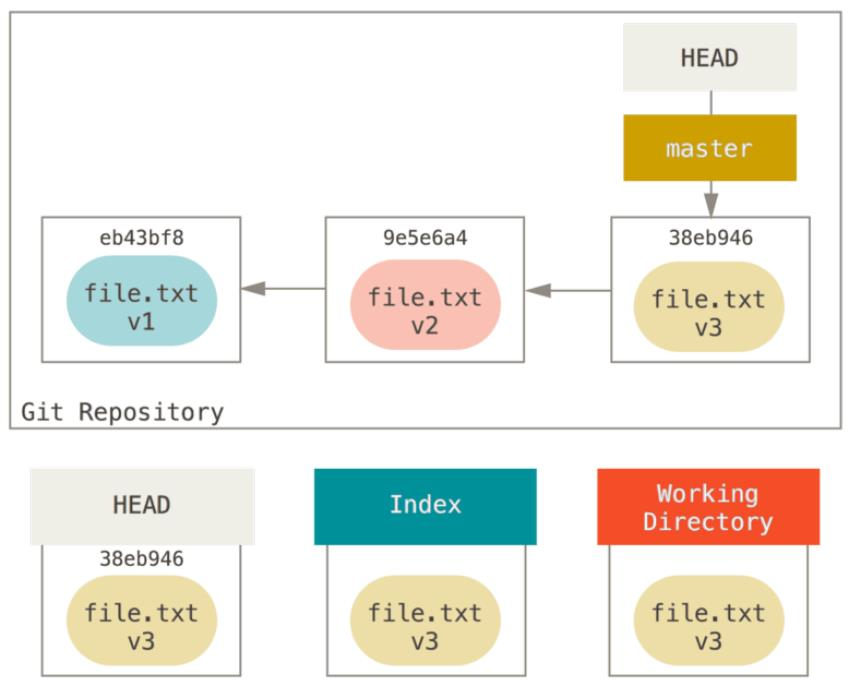
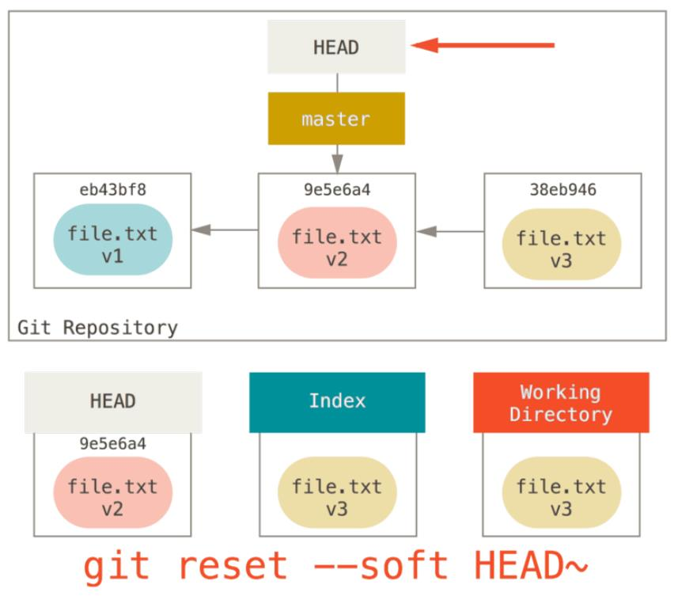
git reset --soft HEAD~会将当前分支指向前一次提交，但是不会修改暂存区和工作目录，相当于撤销了上一次的git commit命令。此时可以更新暂存区，再次执行git commit，它就等价于git commit --amend命令。
git reset --mixed HEAD~命令不仅修改HEAD指向，同时会将暂存区内容也覆盖为上一次提交，但是不会修改工作目录中的内容。其实相当于回滚了git add和git commit两个命令的结果。--mixed选项是reset命令的默认行为。
git reset --hard HEAD~命令将修改HEAD指向，暂存区内容以及工作目录。这个命令相当危险，它会重置工作区内容为上一次提交。
reset会顺序执行如下三步：
- 移动HEAD分支的指向（指定
--soft选项，则到此为止） - 恢复暂存区为HEAD指向内容（指定
--mixed选项/或者未指定--hard，则到此为止） - 恢复工作目录为HEAD指向内容
上述这些命令会针对工作目录的所有文件，如果指定了路径或文件，则reset会跳过第一步HEAD分支指向的修改，并且作用范围只限指定的文件或文件集合。
git reset [HEAD] file.txt 则会将暂存区的file.txt文件恢复为上一次提交中的file.txt文件内容。
git reset eb43bf file.txt 命令会让Git拉取eb43bf提交中的file.txt数据覆盖暂存区中的数据。
这里一旦修改了分支的指向，那么修改前指向的提交就无法回去了，想要回去只能使用git reflog命令找到对应的提交，然后再将分支reset回去。
checkout:
checkout命令也会修改reset中修改的三个位置，取决于是否指定了文件路径。git checkout [branch]命令的运行和git reset --hard [branch]非常类似，有两点区别，checkout命令对工作目录是安全的，通过检查来确保不会将已更改文件弄丢；再一个是checkout修改的是HEAD本身而非HEAD分支指向。
如果checkout带有文件路径，那就和reset类似，不会修改HEAD。git checkout [branch] filepath则会将工作目录文件覆盖。checkout也可以使用--patch选项根据选择一块一块地恢复文件内容。
-b选项表示在切换分支时如果分支不存在，则创建分支。
打标签
Git中也可以给历史中某个提交打上标签，以表示它很重要，对于代码而言往往是发布节点。
git tag命令列举出当前已有的所有标签。
Git中标签有两类，一类是轻量标签，另外一类是附注标签。轻量标签其实就是某个提交的一次备注，没有任何额外信息；而附注标签则比较重，它含有打标签的人信息，以及标签的附注信息，用于说明标签用途。
git tag -a v1.4 -m "ver 1.4"该命令可以创建一个附注标签，-a表示要创建标签，后跟标签名字；，-m选项表示为该标签添加的附注。用git show v1.4命令可以显示标签的信息，从信息中可以看到附注标签带有打标签的人的信息，时间，以及它对应的是那个提交。
$ git show v1.4
tag v1.4
Tagger: Andy Guo <xiao_0429@foxmail.com>
Date: Fri Jun 1 09:59:52 2018 +0800
ver 1.4
commit d48990ab176570526b873a735904c7abf3cdac42
Author: Andy Guo <xiao_0429@126.com>
Date: Thu May 31 17:42:04 2018 +0800
add book
diff --git a/README.md b/README.md
new file mode 100644
index 0000000..3d07efe
轻量标签则更加容易生成了，它不需要任何参宿，只需要git tag v1.2-lw命令即可在当前提交上打一个标签，如果要给特定提交打标签，可以在标签名后跟着提交的哈希值。注意轻量标签不需要任何选项。从下面的标签信息也可以发现，轻量标签就像是提交的一个别名，不会附带任何其他的信息。
$ git tag v1.2-lw ad6131 // 给指定提交打标签，不指定提交则默认当前提交
$ git tag
v1.2-lw
v1.4
$ git show v1.2-lw
commit ad61313d949aa844991e86c036b5b7ed3140e3bc
Author: Andy Guo <xiao_0429@126.com>
Date: Wed May 30 20:02:16 2018 +0800
add new1
如果先要将标签带到远程库中，则需要主动推送上去，git push origin [tagname]可以将指定tag推送到远端服务器上，共享给其他的人。如果想要将所有的标签都带上去，则可以使用 git push --tags命令，--tags选项则表示将所有的标签推送远程仓库。
$ git push origin v1.4
Counting objects: 1, done.
Writing objects: 100% (1/1), 161 bytes | 0 bytes/s, done.
Total 1 (delta 0), reused 0 (delta 0)
To https://github.com/DbgTech/GitTemp.git
* [new tag] v1.4 -> v1.4
对于标签检出来说，其实并不能真正检出它。只能在tag基础上创建分支，然后在该分支上继续修改内容。比如使用git checkout -b version2 v2.0.0命令则是在v2.0.0标签上创建分支version2，并切换到该分支上去。
远程库
和远程库关联，有https和SSH两种方式，HTTPS有时一些服务器上会有大小限制，使用SSH上传代码则没有这样的限制。使用SSH需要配置RSA Key，需设置本地SSH配置，参考github上的Key设置。
git remote可以查看已经配置的远程仓库服务器，它列举出指定过的远程仓库的简写。如果克隆了远程仓库，可以看到origin，它是Git给你克隆的远程仓库的默认名字。
$ git remote
origin
$ git remote -v
origin https://github.com/dbgtech/GNUTools.git (fetch)
origin https://github.com/dbgtech/GNUTools.git (push)
使用git remote add <shortname> <url>来为本地仓库添加一个新的远程Git仓库，同时引入一个可以轻松引用的简写。
$ git remote add pb https://github.com/paulboone/ticgit
$ git remote -v
origin https://github.com/schacon/ticgit (fetch)
origin https://github.com/schacon/ticgit (push)
pb https://github.com/paulboone/ticgit (fetch)
pb https://github.com/paulboone/ticgit (push)
在命令行中使用pb可以替代整个URL，例如想要拉取这个URL对应库中的数据可以运行git fetch pb。
git fetch [remote-name]这个命令会从远程仓库获取数据，从中拉取本地还没有的所有数据，你将拥有远程仓库中所有分支的引用，可以随时合并或查看。
git remote show命令可以显示远程库和本地库关联的相关信息，如下代码段。指出HEAD分支指针指向master，远端的分支有master，并且已经跟踪。本地配置的是master分支来合并远端的master分支代码，本地的push分支也是master推送到远端的master分支。
$ git remote show origin
* remote origin
Fetch URL: https://github.com/DbgTech/GNUTools.git
Push URL: https://github.com/DbgTech/GNUTools.git
HEAD branch: master
Remote branch:
master tracked
Local branch configured for 'git pull':
master merges with remote master
Local ref configured for 'git push':
master pushes to master (up to date)
git remote rename可以将远程仓库的简写名字修改一下，比如git remote rename pb paul将关联的远程库pb简写修改paul。这一这块的简写仅仅是本地设置，不会在远程仓库中生成什么信息。
git remote rm可以将关联的远程仓库删除掉，例如git remote rm paul将上面刚改名的远程仓库简写删除掉，就不再同步paul对应的远程仓库的代码了。
分支管理
几乎所有版本控制系统都支持分支，分支的含义是从开发主线上分开，以免影响开发主线的开发线。Git的分支其实本质上就是指向提交对象的可变指针（一个指向某一系列提交之首的指针或引用），而HEAD则是指向当前分支对象的指针。
其他版本控制系统分支创建过程比较低效，需要创建一个完整的源代码目录，大型项目就很耗费时间。Git的分支模型堪称它的“必杀技特性”。Git处理分支非常轻量，几乎瞬间完成。
进行提交时，Git保存了一个提交对象，提交对象中包含指向工作目录快照的哈希值，父提交的哈希值和提交信息。对于普通提交会有一个父对象哈希值，而对于合并而产生的提交则有两个父对象哈希值，同理多个分支合并产生提交会有多个父对象哈希值。
如图4，给出了一次提交中的对象，本次提交有三个文件，每一个文件都会有一个对象生成（blob对象）；为了表示此次提交对应的快照，需要一个tree对象保存快照信息，目录结构和blob对象索引；同时还需要一个对象保存本次提交的信息，包括作者信息，提交者信息，提交的说明和提交对应的映射对象哈希值（即tree对象的哈希值）。
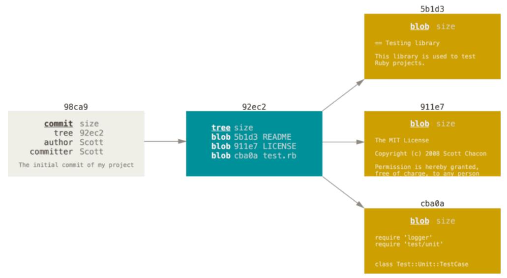
当做了多次提交后，就会形成如下的提交链，其实就是提交历史，如图5所示。
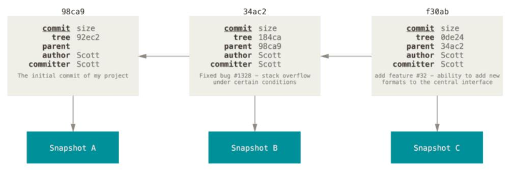
Git的分支其本质上仅仅是指向提交对象的可变指针，Git的默认分支名字为master，多次提交后你其实有的是指向最后那个提交对象的master分支，每次提交自动向前移动。master分支和其他的分支没什么不同，只是git init创建Git库时默认生成的分支是master。
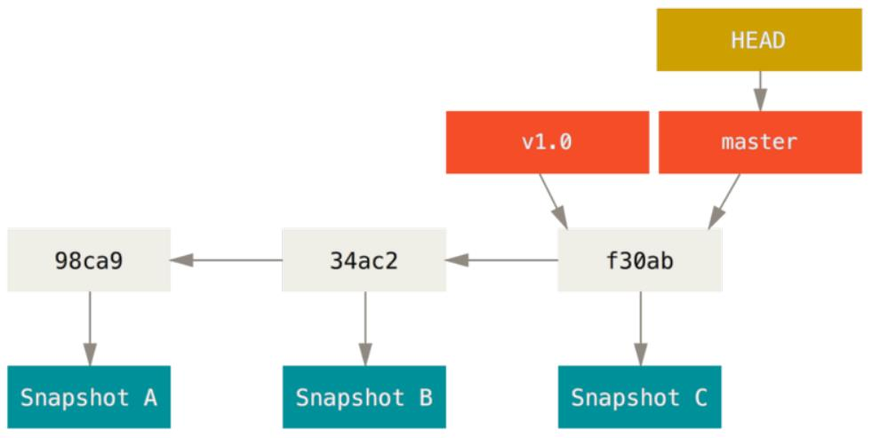
图6给出了分支，tag和HEAD的关系图，所以分支和Tag类似，而HEAD就是指向当前分支的指针。
创建分支的命令很简单，git branch testing命令会在当前提交对象上创建一个指针testing，就成为了分支，以后在它基础上做出的修改就会出现分叉。如下代码块所示，创建了testing分支，git branch命令列举出当前的所有分支，*表示当前工作目录处于那个分支上；在.git/refs/heads/目录下多了一个testing文件，它的内容和master类似都是一个哈希值，指向了一个提交，这里它其实指向了当前目录最新的提交对象。
$ git branch testing
$ git branch
* master
testing
$ ls -la .git/refs/heads/
total 2
drwxr-xr-x 1 XXXXXX 1049089 0 六月 1 11:42 ./
drwxr-xr-x 1 XXXXXX 1049089 0 六月 1 09:56 ../
-rw-r--r-- 1 XXXXXX 1049089 41 六月 1 09:56 master
-rw-r--r-- 1 XXXXXX 1049089 41 六月 1 11:42 testing
$ cat .git/refs/heads/testing
d48990ab176570526b873a735904c7abf3cdac42
$ git log -1 // 最新的一次提交
commit d48990ab176570526b873a735904c7abf3cdac42
Author: Andy Guo <xiao_0429@126.com>
Date: Thu May 31 17:42:04 2018 +0800
add book
在创建了多分支之后，HEAD的作用就体现出来了，它就指向了工作目录当前所处的分支。git log --oneline --decorate命令可以显示当前那些提交对应了那个分支，以及HEAD指向那个分支，如下：
$ git log --oneline --decorate
d48990a (HEAD -> master, tag: v1.4, origin/master, origin/HEAD, testing) add book
f374c9b rm new.txt
0cf0c74 remove usless file
b7573c6 add option -a
从显示的内容可以发现，HEAD指向了master分支，d48990a提交本身即对应了tag，有对应远程仓库的master分支，同时testing分支也指向它。
分支切换
git branch命令仅仅创建了分支，但是并没有切换过去，使用git checkout testing命令可以切换到刚创建的testing分支，如下代码块所示，切换分支之后HEAD指向了新切换的testing分支。所以HEAD就是当前工作目录所在分支的指针。
$ git checkout testing
Switched to branch 'testing'
$ git log --oneline -2 --decorate
d48990a (HEAD -> testing, tag: v1.4, origin/master, origin/HEAD, master) add book
f374c9b rm new.txt
编辑文件，分别在master分支和testing分支上提交一些内容，然后再看份分支情况如下。testing分支和master分支指向的不再是同一个提交对象了，而Tag和远程库分支的依然对应最初的那个提交对象。
$ echo "testing branch edit" >> file.txt // 修改testing分支文件
$ git commit -a -m "[testing] modify file.txt"
1 file changed, 1 insertion(+)
$ git checkout master // 切换分支
Switched to branch 'master'
Your branch is up-to-date with 'origin/master'.
$ cat file.txt
file1.txt
$ echo "master branch edit" >> file.txt // 修改master分支文件
$ git commit -a -m "[master] modify file.txt"
1 file changed, 1 insertion(+)
$ git log --oneline -5 --decorate --graph --all
* b50e971 (HEAD -> master) [master] modify file.txt
| * eab98de (testing) [testing] modify file.txt
|/
* d48990a (tag: v1.4, origin/master, origin/HEAD) add book
* f374c9b rm new.txt
* 0cf0c74 remove usless file
git checkout -b [branchname]该命令可以在创建一个分支的同时切换到新建的分支上，方便操作，不需要先建立分支再执行切换命令了。
分支合并
在日常开发中不会一帆风顺，一个分支就解决了所有问题。总会有紧急情况需要处理，比如已经发布版本出现问题，需要在当前主线分支上修改，而当前主线分支正在进行新的开发，那么就需要在主线分支上新建分支，修改完成后在合并回去。
在进行分支合并时，首先要切换到要合并到的分支上，比如要合并到master分支，git checkout master切换回目标分支，git merge testing，将testing分支代码合并到master分支上。根据master分支上的映像状态，合并时会有两种不同情况。
一种情况是从maser分支上拉出testing分支后，master分支并没有做任何修改，那么合并分支时其实就不需要做什么工作，直接将master向前推进，指向testing分支所指向提交即可。这种情况被称为快进（fast-forward）。对于这种情况下，分支testing已经无用，可以使用git branch -d testing命令直接删除该分支即可。
另外一种情况是master分支在建立了testing分支后做了修改，那么合并时就会有一些麻烦，它需要将两个分支最新的提交和两个分支的共同祖先三个映像进行合并，形成一个新的快照并创建新的提交。这种情况被称为一次合并提交。
如图7，8给出一个典型的一次合并提交的前后状态，这里面就是C4，C5和他们共同祖先C2三方快照进行合并。最终形成的master分支具有两个父提交。合并完成了，被合并分支iss53也就可以被删除了，git branch -d iss53。
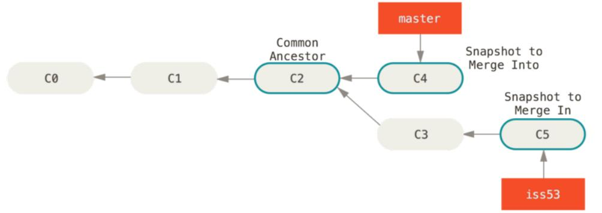
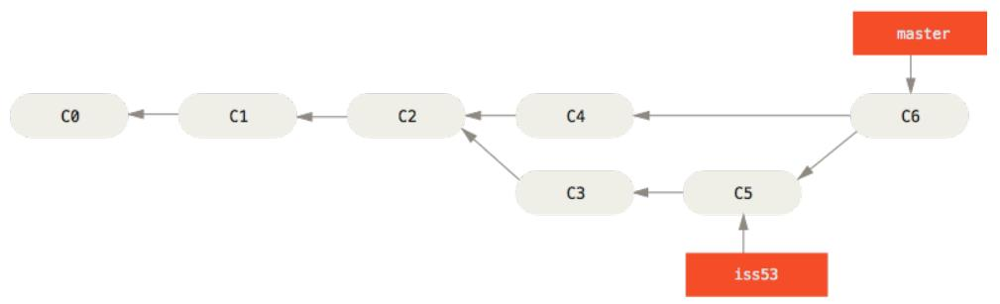
其实在这种情况下是可能出现错误的，就是分支冲突。即在两个分支中对同一个文件的同一个位置做了不同的修改时，Git就无法自动进行合并了，就出现了冲突，如下例子所示。
执行merge命令后出现了冲突，执行git status命令后可以列出冲突文件；出现冲突时文件内容如下cat file.txt命令结果所示，HEAD表示当前分支上内容，=======为两个分支不同内容分割线。编辑文件，去掉这些额外内容，在执行git add file.txt即解决了冲突，再执行git status会提示冲突已解决；最后将合并结果执行git commit进行提交即可。
$ git merge testing
Auto-merging file.txt
CONFLICT (content): Merge conflict in file.txt // 出现冲突
Automatic merge failed; fix conflicts and then commit the result.
$ git status
On branch master
Your branch is ahead of 'origin/master' by 1 commit.
(use "git push" to publish your local commits)
You have unmerged paths.
(fix conflicts and run "git commit") // 提醒出现冲突，有未合并路径
Unmerged paths: // 未解决冲突文件列表，可以使用git add <file>告知冲突解决
(use "git add <file>..." to mark resolution)
both modified: file.txt
no changes added to commit (use "git add" and/or "git commit -a")
$ cat file.txt
file1.txt
<<<<<<< HEAD
master branch edit
=======
testing branch edit
>>>>>>> testing
$ vim file.txt
$ git add file.txt
$ git status
On branch master
Your branch is ahead of 'origin/master' by 1 commit.
(use "git push" to publish your local commits)
All conflicts fixed but you are still merging. // 标识冲突解决了
(use "git commit" to conclude merge)
Changes to be committed:
modified: file.txt
$ git commit
[master 31da258] Merge branch 'testing'
git branch命令
git branch命令列出当前库中的所有分支；git branch -v则给出分支的同时，还列出分支对应提交对象的信息。
--merged与--no-merged两个选项可以过滤列表中已经合并或尚未合并到当前分支的分支。例如查看哪些分支已经合并打当前分支。对于没有合并的分支，如果执行git branch -d命令删除分支，则会提示没有合并过，报错。
$ git branch --merged
* master
testing // 对于执行该命令后，没有星号的可以删除，已经合并过则无用
远程分支
远程引用是对远程仓库的引用（指针），包括分支，标签等。它们位于.git/refs/remotes目录下，git ls-remote (remote)命令或git remote show (remote)命令都可以用来列举远程分支的信息。
$ git ls-remote origin
d48990ab176570526b873a735904c7abf3cdac42 HEAD
d48990ab176570526b873a735904c7abf3cdac42 refs/heads/master
e572e7effe0b2bc05b3a8531cfab216f7a025135 refs/tags/v1.4
d48990ab176570526b873a735904c7abf3cdac42 refs/tags/v1.4^{}
$ git remote show
origin
$ git remote show origin
* remote origin
Fetch URL: https://github.com/DbgTech/GitTemp.git
Push URL: https://github.com/DbgTech/GitTemp.git
HEAD branch: master
Remote branch:
master tracked
Local branch configured for 'git pull':
master merges with remote master
Local ref configured for 'git push':
master pushes to master (fast-forwardable)
远程跟踪分支是远程分支状态的引用，虽然信息在本地，但是这些信息本地无法直接修改，需要通过网络通信操作来移动它们。其实就是在上次链接了远程仓库后分支所处状态的书签。以(remote)/(branch)形式命名，例如origin/master，origin/testting，注意这里的master和testing和本地的master，testing分支并不相同。
远程仓库简写origin并无特殊含义，和master类似，都是git默认使用的名字。但是与其他名字相比并无特殊含义。只是在
git clone执行后给远程仓库设定的名称简写（URL简写）就是origin而已。
如下图9给出了远程引用，远程跟踪分支等概念状态示意图。
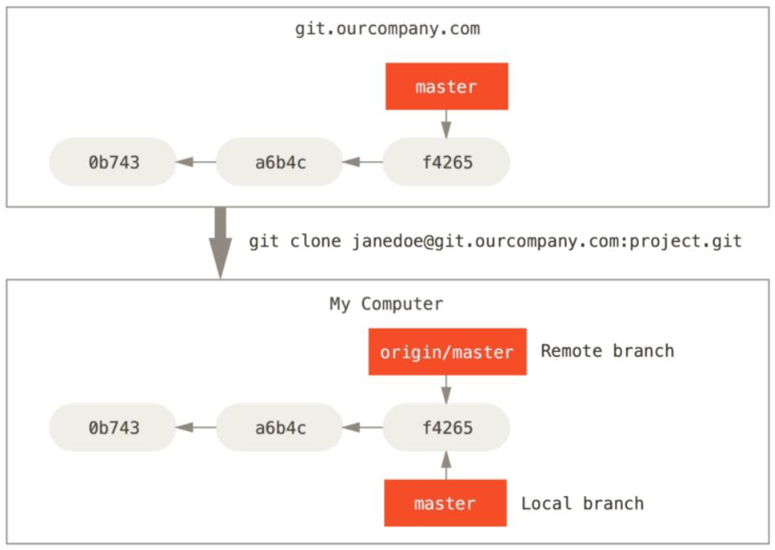
如果有人在已有的master分支基础上推送了新的内容，并且你本地也修改了mster分支内容，那么此时状态就如图10所示。
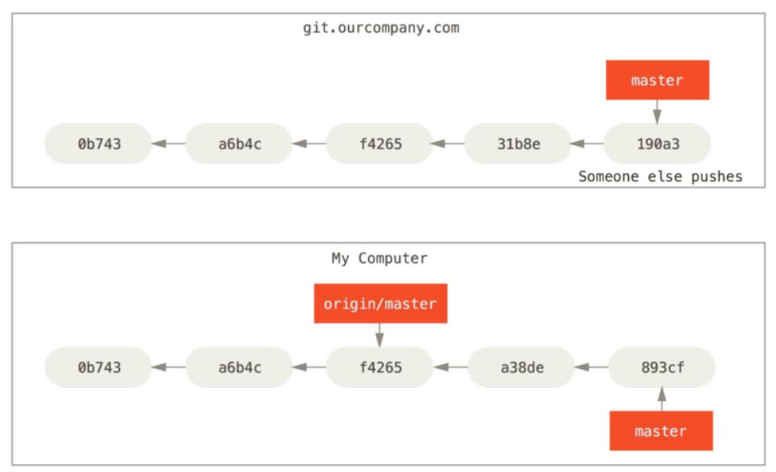
此时如果要同步服务内容，可以执行git fetch origin，该命令会查找origin对应的服务器，并从中抓取本地没有的数据，并更新到本地数据库，移动origin/master指针指向新的提交。但此时它和master属于两个分支，相互并没有影响。如下图11所示。
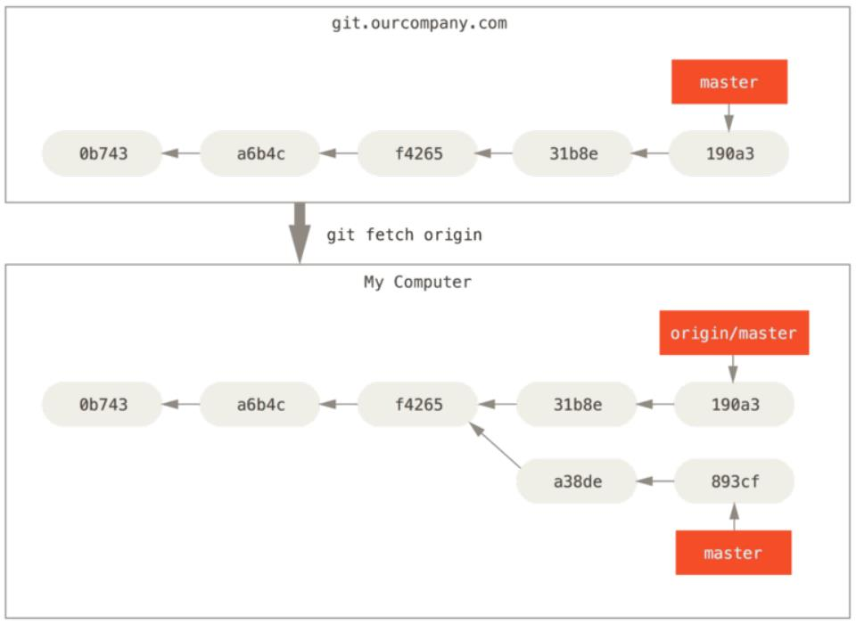
将本地分支推送到远程服务器，git push (remote) (branch)，将本地的branch推送到远程仓库中对应分支上。git push origin localbranch:remotebranch可以将本地分支推送到远程仓库中不同名字的分支上。
git push origin serverfix
git push origin serverfix:serverfix // 将本地serverfix分支代码推送到远程serverfix分支
git push origin serverfix:master // 将本地serverfix分支推送到远程仓库的master分支
git push origin serverfix命令执行时，如果远程仓库没有serverfix分支，将会新建该分支。同理在其他人再抓取远程仓库内容时就会提示有新的分支抓取回来了。
拉取远程仓库数据可以使用git fetch [remote]，如果使用选项--all，即git fetch --all，则会将所有关联的远程仓库数据拉取回来。
抓取数据时提醒有新的分支抓取到，但其实这个分支在本地只有一个
origin/newbranch类似的指针，并没有真正数据对象，快照对象和提交对象下载到本地。
远程仓库内容可以通过git fetch拉取到本地，但是它并不会修改本地目录中，还需要执行git merge命令来将这些远程新拉取分支合并到指定的本地分支上。git pull大多数情况下是git fetch和git merge两个命令合并，对于设置好远程分支跟踪的情况下，git pull会将新的代码拉取并合并到指定的跟踪分支。但是很多情况下容易让人困惑，还是使用fetch与merge命令更好。
在拉取远程仓库的数据命令git fetch origin执行后，可以通过git branch -vv查看当前分支与远程服务器上的差别，如下例子所示。behind 2表示当前分支master落后引用的远程仓库origin/master两次提交。从合并结果可以看到，其实这是一次快速合并，和本地分支的快速合并没有太大区别。从这一方面理解，远程分支引用其实就是等价于本地分支，只不过它们在本地只有一个引用，并没有各次提交对象文件存在，提交对象/快照对象文件等都在远程仓库中。
$ git branch -vv
* master 9e2108e [origin/master: behind 2] modify git-using
$ git merge origin/master // 将远程仓库master分支上的数据合并到当前工作目录master分支
Updating 9e2108e..c4c4dca
Fast-forward
git branch -vv命令可以查看远程仓库分支的追踪情况。
拉取仓库信息完毕后，如果想要使用这个分支上的数据，一方面可以通过上面介绍的git merge将该新分支内容合并到本地某个分支上。另一种方法是在本地基于远程分支origin/newbranch新建一个分支，再在此基础上做进一步修改。
从一个远程跟踪分支检出一个本地分支会自动创建一个"跟踪分支"，跟踪分支就是与远程分支有直接关系的本地分支。如果在一个跟踪分支上执行git pull时Git自动识别去哪个服务器上抓取数据并合并到跟踪分支上。
git checkout -b [branch] [remotename]/[branch] 命令可以轻松从远程跟踪分支检出一个本地分支。git checkout --track [remotename]/[branch]可以用于检出同名的本地分支，并将这个同名分支设置为跟踪分支。
git branch -u origin/newbranch命令可以将本地当前分支用于跟踪远程仓库的上游分支。-u和--set-upstream-to选项意义相同。
对于已经合并的远程分支，可以使用--delete选项的git push命令删除远程分支。如下例子将远程仓库中的serverfix分支删除。
$ git push origin --delete serverfix
To https://github.com/schacon/simplegit
- [deleted] serverfix
变基(rebase)
对于出现多个分支的时候，一种方法是前面的merge，将两个分支和共同的祖先进行三方合并形成新的提交。还有一种方法是rebase。变基的本意是将一个分支上的修改内容都移至另外一个分支上，就像之前的提交"逐一回放"一样。如图12所示，提取C4中引入的补丁和修改，然后在C3的基础上应用一次。
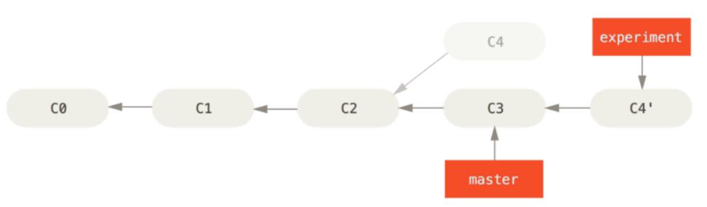
原理是首先找到这两个分支（即当前分支experiment、变基操作的目标基底分支master）的最近共同祖先C2，然后对比当前分支相对于该祖先的历次提交，提取相应的修改并存为临时文件，然后将当前分支指向目标基底C3，最后以此将之前另存为临时文件的修改依序应用。
$ git checkout experiment // 切换到要变基的分支
$ git rebase master // 变基命令
First, rewinding head to replay your work on top of it...
Applying: added staged command
$ git checkout master // 切回master分支
$ git merge experiment // 将master分支快进合并（fast-forward）
变基与Merge没什么本质区别，最终都会将最新的内容合并到一个分支上，但是变基使得历史记录似乎是一条线上。这样推送远程服务器上也是一条线，其他的开发者只需要快进合并即可，而不需要进行整合工作。
git rebase [branch1] [branch2]将分支2变基到分支1上，当然变基完成后还需要git checkout branch1和git merge branch2两个命令将branch1快进合并到和branch2一样的进度。
git rebase --onto [branch1] [branch2] [branch3]命令将branch3相对于branch2和branch3两个分支共同祖先的修改变基到branch1分支上。它可以实现从图13到图14的变化。
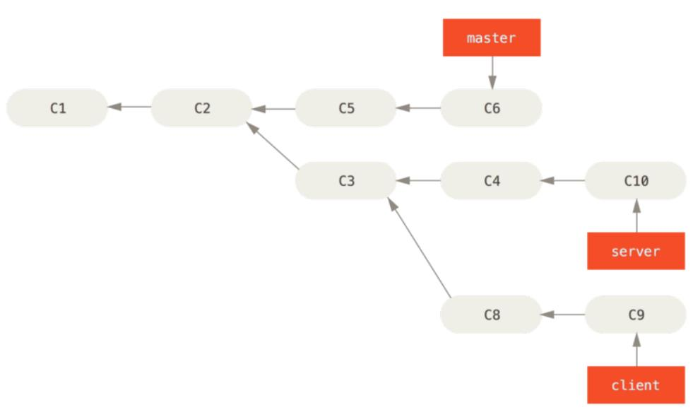
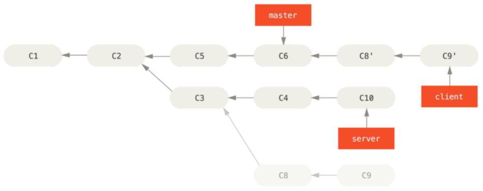
但是变基也有不好的地方，如果一个分支已经提交仓库，被其他人fetch并merge，那么就不能将这个分支变基到其他的分支上了。这样会导致别人在pull代码时，在分支历史记录上出现两个完全相同的提交历史。这时如果这个人将本地仓库推送到服务器，服务器上将导致混乱。这种情况过于复杂，暂时理不清不写例子。
唯一需要记住的是，不要对自己仓库外有副本的分支进行变基。即仓库中的分支已经提交，并被别人同步，则不要再对该分支进行变基。
.git目录说明
在目录中执行了git init命令后或者git clone命令克隆一个仓库到本地时，都会生成一个.git目录，其中包含了Git的所有的配置信息。如果想要将当前库脱离Git管理，直接删除.git目录即可。
如下是一个.git目录中内容的列表。
├── HEAD
├── config
├── description
├── index
├── hooks
│ ├── pre-commit.sample
│ ├── pre-push.sample
│ └── ...
├── info
│ └── exclude
├── objects
│ ├── info
│ └── pack
└── refs
│ ├── heads
│ │ └── master
│ ├── remote
│ │ └── origin
│ │ └── HEAD
│ │ └── master
│ └── tags
└── logs
├── HEAD
└── refs
└── heads
└── master
HEAD: 当前分支的指针，表示当前位于哪个分支上。
config: 包含了仓库的设置信息，该文件中设置只对当前仓库有效。信息包括远程仓库URL，email地址，以及用户名等，git config不使用--global或--system修改的就是该文件。
description: gitweb用来显示仓库的描述，这里不需要关注。
index: 保存了暂存区信息。
hooks: Git提供了一系列脚本，可以在git每个有实质意义的阶段让它们自动运行。这些脚本就被称为hooks，可以在commit/rebase/pull等命令前后运行，脚本名字表示什么时候运行。
info/exclude: 作用类似.gitignore文件，就是不想让git处理的文件写到该文件中。
objects: 存放数据的压缩文件，快照的压缩文件和提交的压缩文件，即所有的对象。其中包括数据对象文件，blob类型；快照对象，tree类型；提交对象，commit类型。
refs: 该目录内保存了Git引用（References，缩写refs）。引用其实就是一个保存SHA-1值的文件，并给文件起一个简单的名字，然后可以用这个名字来替代原始SHA-1值。该目录下会包含子目录，remotes中保存对应远程库的分支信息（远程引用）；tags为当前库中所打的tag信息（标签引用）；还有就是heads存储本地库的分支（本地引用）。
- heads: 存放当前库中的分支信息
- tags: 在库中打的标签（tag）都存放在这个目录中，每个tag对应一个文件
- remotes: 保存了远程库中的分支信息
logs: 缓存了日志信息。
Git对象
Git对象包括多种，blob类的数据对象，tree类型的对象和commit类型的提交对象。
如下使用git cat-file命令显示当前master分支最新提交指向的树对象，master^{tree}表示master分支上最新的提交所指向的树对象。
$ git cat-file -p master^{tree}
100644 blob 6f670c0fb53f9463760b7295fbb814e965fb20c8 test1.txt
比如，如下代码块中所示的某次提交的树对象解析，它会有如15所示的对象树结构。
$ git cat-file -p master^{tree}
100644 blob a906cb2a4a904a152e80877d4088654daad0c859 README
100644 blob 8f94139338f9404f26296befa88755fc2598c289 Rakefile
040000 tree 99f1a6d12cb4b6f19c8655fca46c3ecf317074e0 lib
$ git cat-file -p 99f1a6d12cb4b6f19c8655fca46c3ecf317074e0
100644 blob 47c6340d6459e05787f644c2447d2595f5d3a54b simplegit.rb
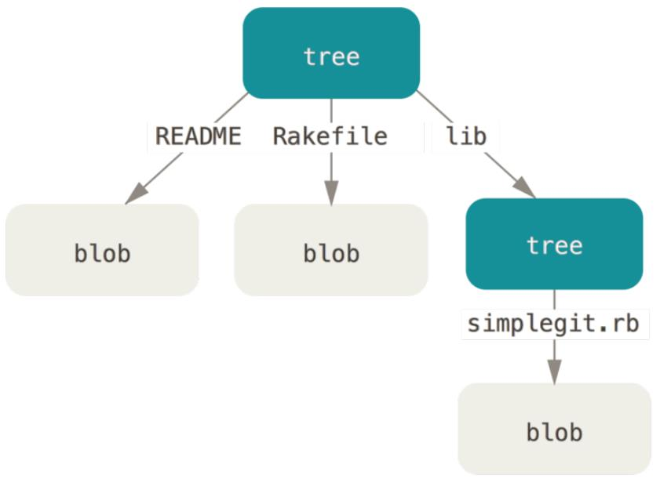
Git引用位于refs目录下，包括普通引用（即/refs/heads/master这样一类本地引用），符号引用HEAD（指向引用），标签引用（指向标签），远程引用（指向分支上的上一次推送时对应的提交）。
commit内容介绍
git对跟踪的文件会进行压缩，并用git自己的数据结构形式存储。压缩的对象有一个唯一的名字即一个哈希值，这个名字会存放在object目录下。commit的结果可以当作一个工作目录的快照，但不仅仅是一种快照。
在提交内容时，git为了创建工作目录的快照做了两件事情：
- 如果文件没有发生变化，git仅仅只把压缩文件的名字（就是哈希值）放入快照（树对象）。
- 如果文件发生了变化，git会压缩它，然后把压缩的文件存入object目录，最后再把压缩文件的名字（哈希值）放入快照（树对象）。
快照创建好后，本身会被压缩并且以一个哈希值命名，所以压缩对象都放在了object目录了。比如一个对象的Hash（SHA1）值为4cf44f1e3fe4fb7f8aa42138c324f63f5ac85828，那么它会存在4c子目录下以f44f1e3fe4fb7f8aa42138c324f63f5ac85828名字命名。
├── 4c
│ └── f44f1e3fe4fb7f8aa42138c324f63f5ac85828 // hash
├── 86
│ └── 550c31847e518e1927f95991c949fc14efc711 // hash
├── e6
│ └── 9de29bb2d1d6434b8b29ae775ad8c2e48c5391 // hash
├── info // let's ignore that
└── pack // let's ignore that too
一次提交中具有2+n+sN个对象生成，n对应于n个修改或加入的文件；2个对象中，一个是提交时所创建的快照，另外一个是本次提交的信息，比如工作目录快照哈希值，提交说明信息，提交者，父提交的哈希值;sN是此次提交中包含的子目录的数量。如下代码块是一次提交几个对象的内容，在这次提交中一共加入两个文件file1.txt，file2.txt，它们的内容对应文件名（容易识别）；提交时注释内容为add two file。所以这次提交就有四个对象，分别对应两个文件，快照和提交信息文件；它们如下所列出对应关系。在快照文件中可以发现，每一行四列，第一列为文件类型，第二列为数据类型，第三列为哈希值，第四列为对应文件或目录名字。
$ git cat-file -p 5a089aae997b6f247fa66848206e9b5261d3325d
file1.txt
$ git cat-file -p 0ac9638029d5f57f672ab7e1818bcf28812676ad
file2.txt
$ git cat-file -p 67ad13cb129c55ff209597b03bf2af44d6d61d35
100644 blob 5a089aae997b6f247fa66848206e9b5261d3325d file1.txt
100644 blob 0ac9638029d5f57f672ab7e1818bcf28812676ad file2.txt
100644 blob fa49b077972391ad58037050f2a75f74e3671e92 new.txt
$ git cat-file -p ff8c1680b1cdfeb9dc297bcc4d87501df4949d64
tree 67ad13cb129c55ff209597b03bf2af44d6d61d35
parent ad61313d949aa844991e86c036b5b7ed3140e3bc
author Andy Guo <xiao_0429@126.com> 1527682270 +0800
committer Andy Guo <xiao_0429@126.com> 1527682270 +0800
add two file
分支/标签/HEAD介绍
HEAD对应内容是什么呢？如下所示例子。HEAD并不是一个哈希，它可以看作目前所在分支的指针。那它既然是指针，指向内容是什么呢？看一下master的内容。从master的内容可以看到它是一个哈希值，并且这个哈希值就是上面我们刚刚进行的一次提交，即提交对象的哈希值。所以HEAD可认为是当前分支（master）的指针，提交的指针的指针；而master则是分支，本质上是提交对象的指针。
$ cat HEAD
ref: refs/heads/master
$ cat refs/heads/master
ff8c1680b1cdfeb9dc297bcc4d87501df4949d64
标签 :
标签其实也可以认为是一个指针，它本身是一个文件（对象），对于轻量标签而言它的内容是某个提交的哈希值；对于附注标签而言它的内容指向一个对象，这个对象类似一个提交，它包含了本标签的信息，以及标签对应的提交的哈希值。如下所示，
$ cat .git/refs/tags/v1.4 // 查看附注标签内容
e572e7effe0b2bc05b3a8531cfab216f7a025135
$ git cat-file -p e572e7
object d48990ab176570526b873a735904c7abf3cdac42
type commit
tag v1.4
tagger Andy Guo <xiao_0429@foxmail.com> 1527818392 +0800
ver 1.4
$ cat .git/refs/tags/v1.2-lw // 查看轻量标签内容
ad61313d949aa844991e86c036b5b7ed3140e3bc
$ git cat-file -p ad6131
tree 717d058626bd4f429a72deac9d28754f6a4d2401
parent 7723e6343c479cccb390bab4e7ff82e087acbee7
author Andy Guo <xiao_0429@126.com> 1527681736 +0800
committer Andy Guo <xiao_0429@126.com> 1527681736 +0800
add new1
分支 :
从另外一方面讲，一次提交并非当前工作目录的快照，它是想要提交文件的快照（本次提交中只保存了修改的文件）。如下代码块给出了分支的真正含义，创建一个分支testing，会发现在.git/refs/heads/目录中会多一个文件，它其实就是分支文件，它的内容和master类似，都是某次提交的哈希值。从这里可以发现分支其实就是指向提交对象的指针。
$ git branch testing
$ git branch
* master
testing
$ ls -la .git/refs/heads/
total 2
drwxr-xr-x 1 XXXXXX 1049089 0 六月 1 11:42 ./
drwxr-xr-x 1 XXXXXX 1049089 0 六月 1 09:56 ../
-rw-r--r-- 1 XXXXXX 1049089 41 六月 1 09:56 master
-rw-r--r-- 1 XXXXXX 1049089 41 六月 1 11:42 testing
$ cat .git/refs/heads/testing
d48990ab176570526b873a735904c7abf3cdac42
$ git log -1 // 最新的一次提交
commit d48990ab176570526b873a735904c7abf3cdac42
Author: Andy Guo <xiao_0429@126.com>
Date: Thu May 31 17:42:04 2018 +0800
add book
By Andy @2018-06-08 09:31:21